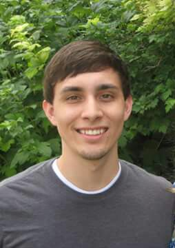

About Me
Hi there, and welcome to my portfolio! My name is Andrew Reyes-Cairo. I'm really excited to show you all the things I've been working on, but first I'd like to tell you a little bit about myself. I'll get the basics out of the way first. I'm 25 years old, I've been married for four years, and have no children as of yet. Aside from learning new and exciting things about coding, I really love taking care of animals, playing sports, and being in the great outdoors. As far as animals go, I have a dog, and two lizards. I plan on acquiring many more once our living space improves a bit. My favorite sport is tennis. I've been playing since high school and can't seem to stop. And some of my favorite things to do outside are fishing and camping.
I've been working in the tech industry for about 4 years now, and absolutely love it. I started working as a tech support agent and decided I wanted to learn how to code, and become a developer. I started teaching myself using resources on the internet as well as all the books and manuals I could get my hands on. I learned a lot of basic front end web development, and my work helped me out by allowing me to learn on the job by giving me smaller projects. a few years later and I'm working full time as a developer! My thirst for knowledge didn't stop there and I decided to enroll in the University of Utah's coding bootcamp in order to get my feet even more wet, and learn as much as I could about full stack web development. Needless to say I'm excited for this new journey, and for new challenges that will allow me to improve my skills and showcase exactly what I can do.